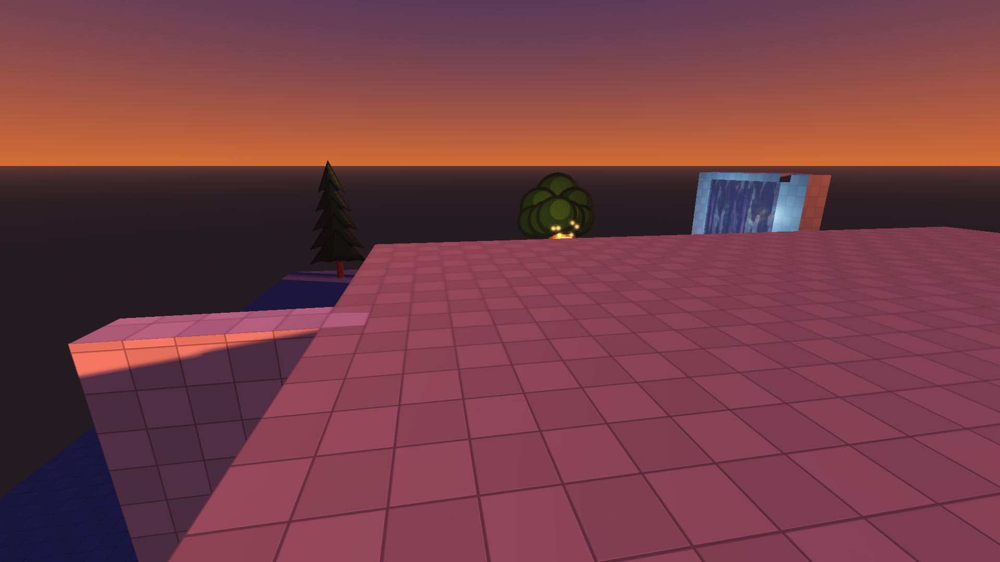
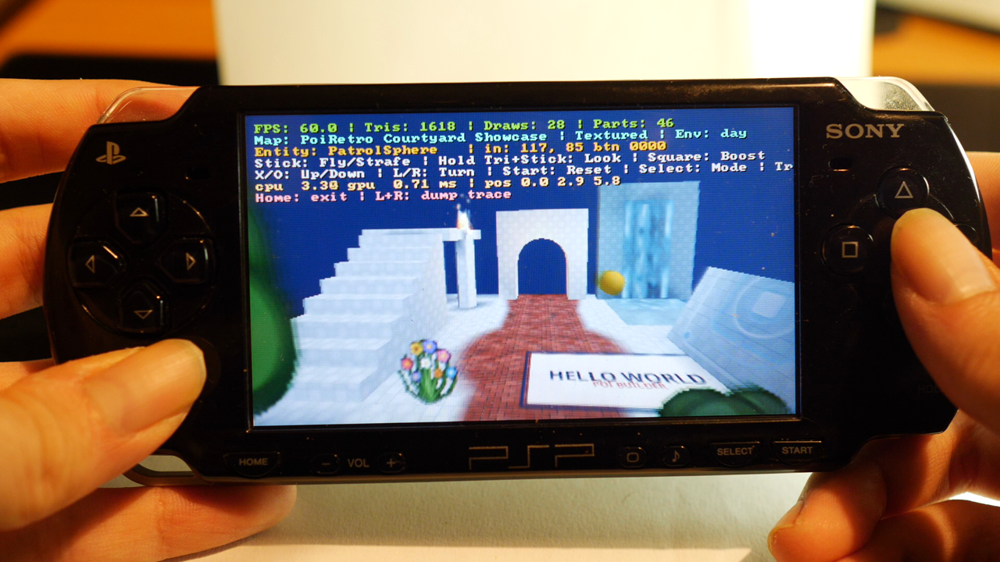
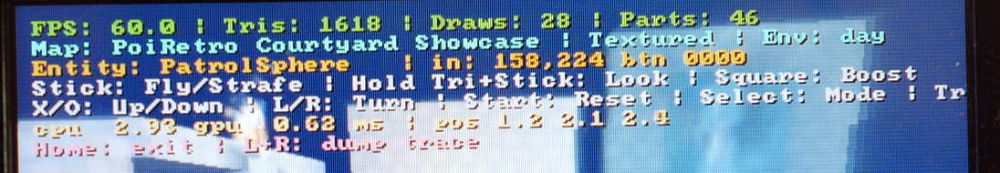

Walkthrough — export to PSP / retro
Take a finished map to the retro target: export the .pbm, verify it, and implement the format in your own retro engine from the format spec and the reference renderer.
The retro pipeline is the reason PoiBuilder exists: build a map with modern editor comfort, then export a map a 2004 handheld can chew. This walkthrough picks up where the modern walkthrough ended — the same demo map, now headed for the PSP. (PSP performance is hand-confirmed smooth for the reference maps; the rough edges that remain on the device are listed in Known issues.)
About the scripts on this page
The PSP pipeline is the one place this documentation leans on scripts that live in the PoiBuilder repository rather than on editor buttons: run_viewer.sh (the Godot viewer of a bake), run_psp.sh (build + run on the device over PSPLink), and the hardware measurement loop around them. They are reference tooling, written for OUR bench setup — a Linux workstation, a real PSP over USB, PSPLink, one specific Godot build. Treat them as something to READ and adapt, not as turnkey installers: paths, device names and the run loop may well need adjusting to your machine. The contract is still the file format (section 3) — the scripts only make it convenient to verify and to see the map running.
1. Export the .pbm
Toolbar Export...Row 2 · ExportExport...Opens the export dialog: PBM (the retro .pbm map, default) or GLB — modern bake (lightmap-ready) or retro baked (vertex-lit) — with the bake options.Needs: Nothing (always enabled) → PBM — PoiBuilder Retro Map (PSP) → Export. One click writes res://exports/exported_map.pbm (and you can write a retro-baked .glb of the same bake alongside it for previewing in Godot).
What the export does to your map — all automatic:
- Subdivides faces to the texture tiling grid (optional).
- Bakes direct light, shadows and AO into vertex colours.
- Bakes splat paint and decals into unique tile textures; unpainted tiles reuse the base.
- Sanitizes every texture: power-of-two, clamped to the max size you chose (default 512), alpha rules per material.
- Writes collision hulls, lights, billboards, particle emitters, walkable meshes, and the environment preset (Dawn/Day/Dusk/Night — the demo map is Dusk).

Authoring constraints for the target are documented in the Retro Authoring Guide — architecture scale, particle budgets, the texture-cache cliff, and what the bake does per material.
2. Verify before the device
./run_viewer.sh— the same bake in a Godot viewer (baked / vertex colour / textures / wireframe / colliders + play mode). If it looks wrong here, it is not the PSP's fault.- PPSSPP — "does it look right" ONLY. The emulator rasterizes on your host GPU with a huge texture cache; its frame rate tells you nothing about the device (why).
3. The format is the contract
The .pbm binary layout is fully specified in The PBM format specification — geometry, tiles, lights, billboards, emitters, colliders, the environment lump, and the consumer-side performance rules the format was designed around.
To run your map in your own retro engine, implement the format against that spec. The repository's PSP homebrew engine is the reference implementation:
retro_engine/psp/pbm_loader.creads every lump of a.pbm— the sanest starting point.retro_engine/is the reference renderer and viewer around it.
It is a proof of concept and a performance sanity check, not an engine you ship: no gameplay, no scripting. Read the loader, take the format, and wire it into YOUR engine — that is the intended use.
4. On the real device
The reference build runs on real hardware over USB:
./run_psp.shbuilds the PSP eboot (when missing) and runs the map on the device via PSPLink.HARDWARE-TESTING.mddocuments the measurement loop;OPTIMIZATION.mdcarries the measured cost of every engine decision.


5. If something looks wrong on the PSP
Known rough edges are collected in Known issues — the ones specific to the device: billboards render unlit regardless of their lit flag, a transparent scrolling plane can cast an unexpected shadow, and a poibuilderized mesh can export with mangled UVs while looking fine in the editor. Check there before filing a bug.
For the modern-side equivalent of this page — exporting a GLB into a fresh Godot project — see the modern walkthrough's export steps.